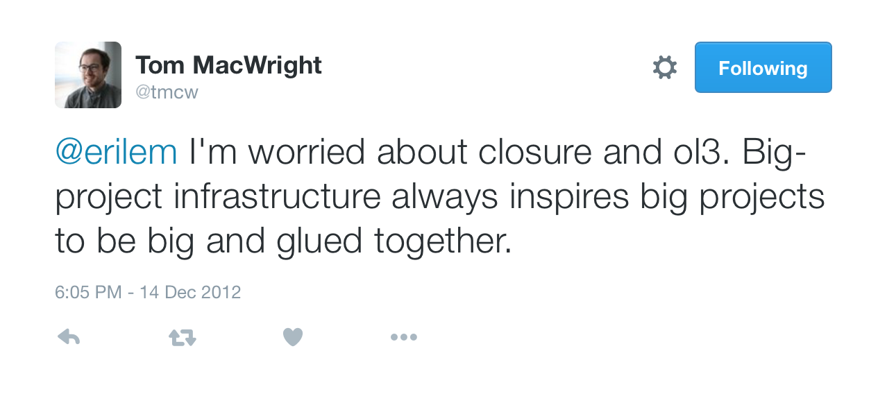
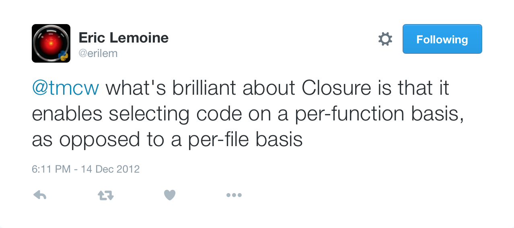

Tech Talk
July 21st, 2016
First OpenLayers 3 sprint in Chambéry, France
Camptocamp and Klokan Technologies promote the use of Closure Compiler and Closure Library
... is a tool for making JavaScript download and run faster
It parses your JavaScript, analyzes it, removes dead code and rewrites and minimizes what's left.
It also checks syntax, variable references, and types, and warns about common JavaScript pitfalls.
... is a broad, well-tested, modular, and cross-browser JavaScript library
Sounds great, so why get rid of it?
"A well-tested library can insulate you from cross-browser compatibility issues and the minutiae of client-side programming, letting you focus on the fun stuff."
Most cross-browser issues are a problem of the past
Client-side JavaScript is the fun stuff :-)
"If you are developing a large or growing application, you may benefit from the Closure Library's breadth."
OpenLayers is a library, not an application
Uncommon and complicated build stack
Hard to include 3rd party libraries
Encourages opt-out of unneeded features instead of opt-in for required modules
When building applications!

Every unused function will be stripped out
FOSS4G conference, Seoul, South Korea
OpenLayers developers decide to remove the dependency on Closure Library and allow the use of mainstream build tools and bundlers.
Those who want to use Closure Compiler can still do so.
Closure Library removal is 95% complete
Increased performance with our own lightweight event system and matrix transforms
September 2015: 143 kB gzipped, minified from 3.8 MB
July 2016: 140 kB gzipped, minified from 2.9 MB
... and the library has grown in terms of features
Thanks to the great OpenLayers community!
The Closure Library removal would not have been possible without dozens of pull requests from contributors.
Use ES2015 modules instead of goog.provide/goog.require
Details will be discussed in the following weeks
Community input welcome
Easier to include only what's needed
Lower entry barrier to using and contributing to the library
Free choice of build tools and bundlers
Closure Library removal: #4128
Switch to ES2015 modules: #5623